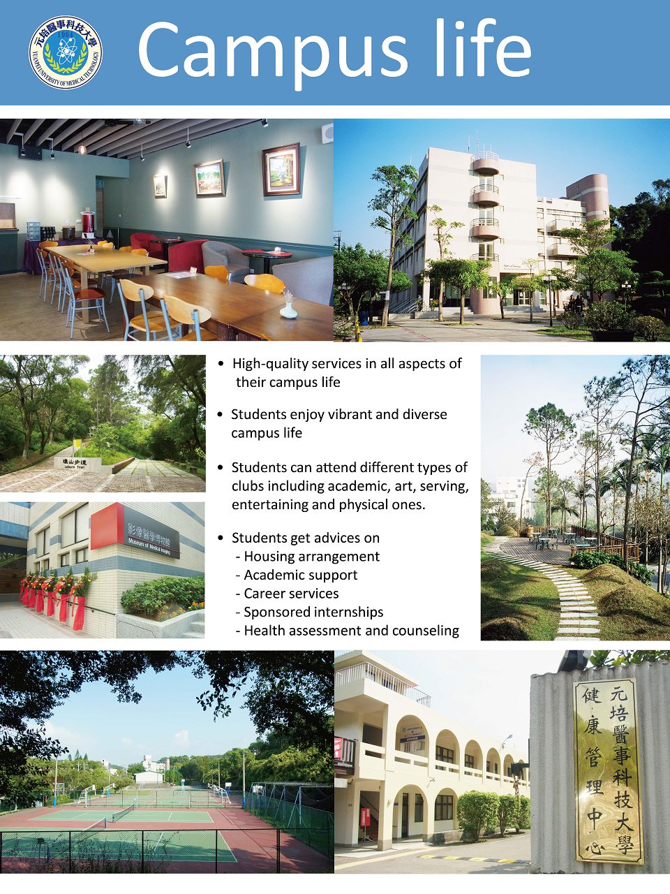

 |
更多學校簡介影片..『元』乃萬物之初，說明本校是台灣醫事技術學校的發端者，期許學子研究萬物與生命根源，『培』為培養出優秀的醫技人才，發展科學，元琣秉持創校人蔡炳坤先生的教育理念【培育醫學技術專業人才、強化醫療功能、健全醫務管理、增進全民健康、達成醫療現代化的目標】 |
| |
更多學校簡介影片..『元』乃萬物之初，說明本校是台灣醫事技術學校的發端者，期許學子研究萬物與生命根源，『培』為培養出優秀的醫技人才，發展科學，元琣秉持創校人蔡炳坤先生的教育理念【培育醫學技術專業人才、強化醫療功能、健全醫務管理、增進全民健康、達成醫療現代化的目標】 |